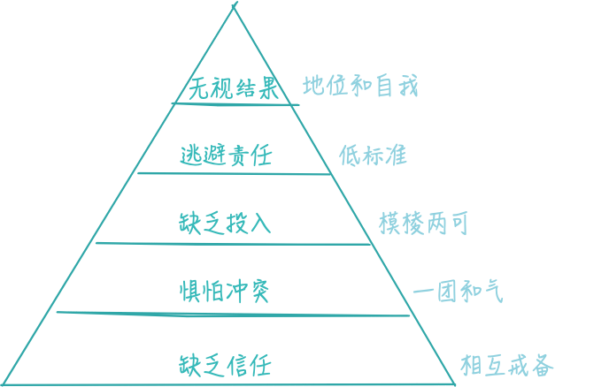
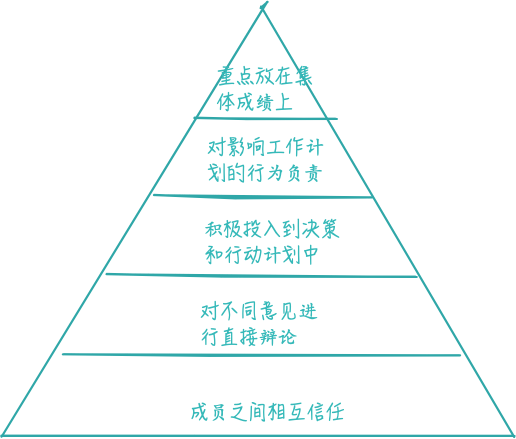

如果你能让一个组织中的所有成员齐心协力，你就可以在任何时候、任何市场状况下、任何行业中纵横驰骋，战胜挑战。
在《系统架构》一书中作者提出：系统的功效必须大于各自元素的功效之和。而任何一个团队都可以视为一个系统，对于大多数管理者来说，让团队相互协作发挥出一加一大于二的力量是其最重要的工作。团队协作之所以不能良好的实现，是因为总是不自觉的陷入了五个很普通但却很危险的沼泽之中。我们这里称其为团队协作的五大障碍。他们并不是相互独立，而是共同作用，互为因果的。
团队协作的第一大障碍是团队成员之间缺乏信任。因为缺乏信任，团队就无法产生直接而激烈的思想交锋，不敢发表自己的意见，也就产生了第二大障碍——惧怕冲突。因为惧怕冲突，缺乏必要的争论，也就不能真正统一意见，从而导致团队成员缺乏投入。因为缺乏投入，又没有真正达成共识，当出现不好的结果时，团队成员就会逃避责任，甚至相互抱怨。最终会使团队成员把个人利益放在团队的共同利益之上，也就导致了团队无视结果。

与此相反的，当我们从积极的角度去思考时，一个真正团结一致的团队应该是下图这样的，看起来简单，在实际中要做到却是很难的，需要高度的组织纪律性和持久性。

那么我们该如何克服这五大障碍呢？
缺乏信任
信任是高效、团结一致的团队的核心，没有信任，团队协作就无从谈起。在这里信任是指团队成员之间相信同事的言行是出于好意，在团队里不必过分小心或互相戒备，成员之间可以放心的接受彼此的批评。充满信任的团队成员具有以下表现：
- 承认自己的弱点和错误
- 主动寻求别人的帮助
- 欢迎别人对自己所负责的领域提出问题和给予关注
- 在工作可能出现问题时，相互提醒
- 愿意给别人提出反馈意见和帮助
- 赞赏并且学习别人的技术经验
- 把时间和精力花在解决实际问题上，而不是流于形式
- 必要时向别人道歉，接受别人的道歉
- 珍惜集体会议或其他可以进行团队协作的机会
克服缺乏信任障碍可以通过以下方法（不限于）：
- 个人背景介绍，彼此了解
- 成员工作效率讨论
- 个性及行为特点测试
- 360度意见反馈
- 集体外出实践
作为团队领导需要率先承认自己的不足，勇于在下属面前抛开面子问题。团队领导必须保证大家承认弱点后不会因此而受到不利影响。
惧怕冲突
良好而持久的合作关系，需要积极的冲突和争论来促使其前进。我们需要降积极的争论和消极的争吵或个人矛盾区分开。争论的唯一目的是在最短的时间内找到最佳的解决方案。拥抱冲突的团队具有以下特点：
- 召开活跃、有趣的会议
- 汲取所有团队成员的意见
- 快速的解决实际问题
- 将形式主义控制在最小限度
- 把大家持不同意见的问题拿出来讨论
克服惧怕冲突障碍的方法可以有：
- 挖掘争论话题，有意的挖掘一些隐藏的分歧摆到桌面上
- 实时提醒，成员相互监督，不要放弃有益的辩论话题
团队领导在发生争论时，不应该试图去维护成员之间的平衡，怕他们受到伤害。应该冷静审视、顺其发展，即使有些混乱也不要随意打断。同时领导也要以身作则，参与争论。
缺乏投入
优秀的团队可以在很短的时间内达成明确的共识，大家都按照最终决定进行工作，即使先前反对这项决定的人也是如此。而缺乏投入的两个重要原因通常是追求绝对一致和追求绝对把握，全力投入的团队具有以下表现：
- 制定出明确的工作方向和重点
- 公平听取全体成员的意见
- 培养从失误中学习的能力
- 毫不犹豫，勇往直前
- 必要时果断调整方向
克服缺乏投入障碍的方法有：
- 统一口径
- 设置最终期限（deadline）
- 风险预估
- 低风险激进法
团队领导应该比其他成员更能接受可能做出错误决策的事实，不应该把过多注意力放在追求绝对一致和绝对把握上。
逃避责任
当涉及到工作质量和绩效时，逃避责任就会变得非常敏感。而当团队成员由于逃避责任而导致整体效益下降时，他们就会真的相互怪罪。要保持团队高效率地工作，最有效的方法就是同事间相互施加压力。负责任的团队会具有以下表现：
- 确保让表现不尽如人意的成员感到压力，使其尽快改进工作
- 发现潜在问题时毫无顾虑的向同事指出
- 尊重团队中以高标准要求工作的同事
- 免除绩效管理以及改进计划这类过度形式主义的措施
克服这一障碍的方法有：
- 公布工作目标和标准
- 定期对成果进行简要回顾
- 团队嘉奖
团队领导应该避免使自己成为团队的唯一负责人，为团队建立整体的负责机制，要求大家共同承担责任。
无视结果
如果团队成员倾向于关注集体工作目标以外的事情，往往会带来巨大的危害。尽管人人都有自我意识，但一直优秀的队伍，成员必须把集体利益放在个人利益之上。重视集体成绩的团队应该有以下表现：
- 有得力的员工加入
- 不提倡注重个人表现
- 正确对待成功和失败
- 团队成员能够为团体利益牺牲个人利益
- 凝聚力强，不会轻易解体
要客服这一障碍，可以通过公布工作目标和奖励团队成就的办法实现。公布自己的工作目标，向公众承诺要获取成功的团队会具有更高的工作热情，更渴望取得结果。而仅仅声称“我们会尽力而为”的团队则无意识、微妙的为自己的失败做好了准备。激励团队成员追求集体利益的另一个有效方法就是将他们的奖励，尤其是奖金，与团队的工作成绩联系在一起。而不是仅仅让员工以“努力工作”的名义取得奖励，这等于传递了一种是否取得成果也无关紧要的信息。
对于这种障碍，团队领导首先要自己走出自我主义的误区，培养客观的态度，奖励那些真正为集体利益作出贡献的成员。
团队是由人组成，每个人都是不完美的，最终需要团队成员克服人性的弱点，建立信任，充分表达，全力投入，重视集体，从而取得成功。